On this page
The used-car team photographs every trade-in and then types the listing by hand. Service wants VINs read from door-jamb plates. Marketing wants a hero shot of the Volt on a wet track before the car exists. You have one Foundry resource and one deployed GPT model; today you add an image model.
Part 0The idea in five minutes
Two different tools look at an image today. Azure AI Vision (a Foundry Tool) is fast, cheap and structured: it returns JSON with boxes and confidences, in a fraction of a second, for a fraction of a cent. A multimodal model (gpt-4.1-mini with an image in the prompt) is slower and costs tokens, but it can reason: write a listing, suggest what to inspect, answer questions.
Vision measures. The model judges.Count with Vision, read with Vision, and ask the model only when you need an opinion.
"Interpret visual input in prompts" = send an image to a multimodal chat model as an image_url (or input_image) content item alongside text. "Create new visual outputs" = deploy an image-generation model and call images/generations with a prompt. "Vision capabilities in an app" = either the Azure AI Vision SDK/REST (captions, objects, OCR) or the multimodal model, chosen by whether you need structure or judgement. Face recognition is restricted; people detection is not.
Part 1Reload your pit board and get the photos
export STUDENT=s07; export RG=rg-ai901-$STUDENT; export NAME=ai901-$STUDENT-pitcrew; export LOC=eastus2; export PROJECT=proj-ai901-$STUDENT
export KEY=$(az cognitiveservices account keys list -n $NAME -g $RG --query key1 -o tsv)
export ENDPOINT=https://$NAME.cognitiveservices.azure.com; export AI_ENDPOINT=https://$NAME.services.ai.azure.com; export AOAI_ENDPOINT=https://$NAME.openai.azure.com
export PROJECT_ENDPOINT=$AI_ENDPOINT/api/projects/$PROJECT
export FOUNDRY_ENDPOINT=$ENDPOINT FOUNDRY_ENDPOINT_AI=$AI_ENDPOINT AI_KEY=$KEY CHAT_MODEL=gpt-4-1-mini IMAGE_MODEL=flux-2-pro
curl -sLO https://varoonsahgal.github.io/az901/downloads/lot-photos.zip && unzip -oq lot-photos.zip -d lot && ls lotSixteen public-domain photos: sedans, an SUV, a pickup, a minivan, an EV, a classic, a motorcycle, bicycles, a traffic jam, a car wash, an engine bay, a showroom and a road trip. Credits are on the credits page.
Part 2Azure AI Vision · the fast, structured eye
One request, every feature. Send the SUV photo as raw bytes and ask for caption, dense captions, tags, objects, people and text:
curl -s -X POST "$ENDPOINT/computervision/imageanalysis:analyze?api-version=2024-02-01&features=caption,denseCaptions,tags,objects,people,read&gender-neutral-caption=true" \ -H "Ocp-Apim-Subscription-Key: $KEY" -H "Content-Type: application/octet-stream" --data-binary @lot/suv-volvo-xc90.jpg | jq '{caption: .captionResult, objects: [.objectsResult.values[] | {name: .tags[0].name, conf: .tags[0].confidence, box: .boundingBox}], tags: [.tagsResult.values[:8][] | .name]}'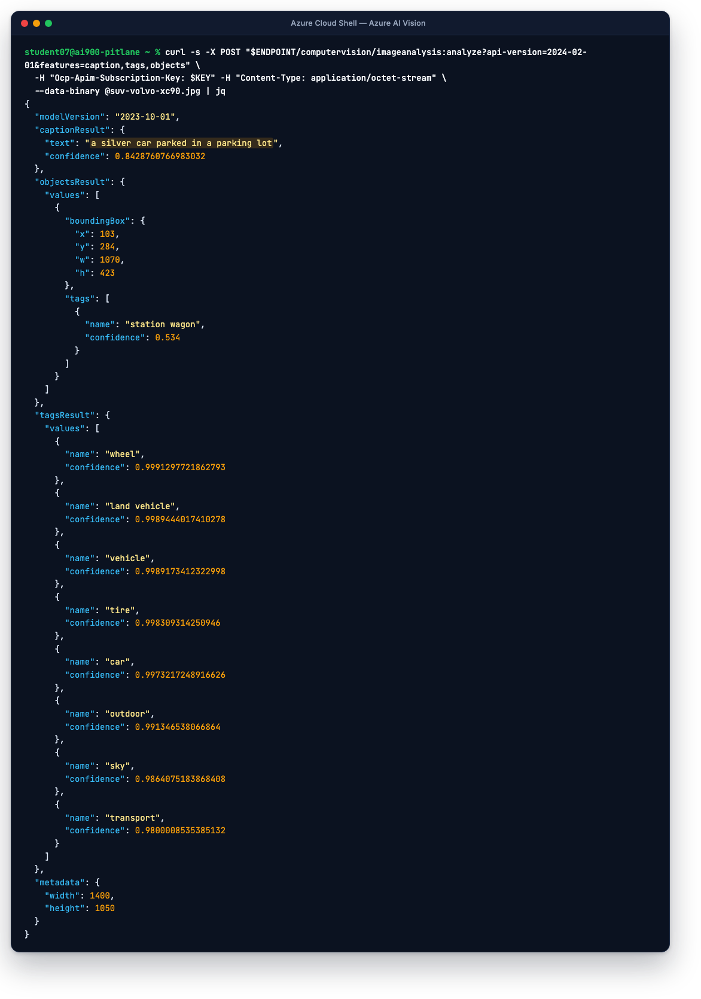
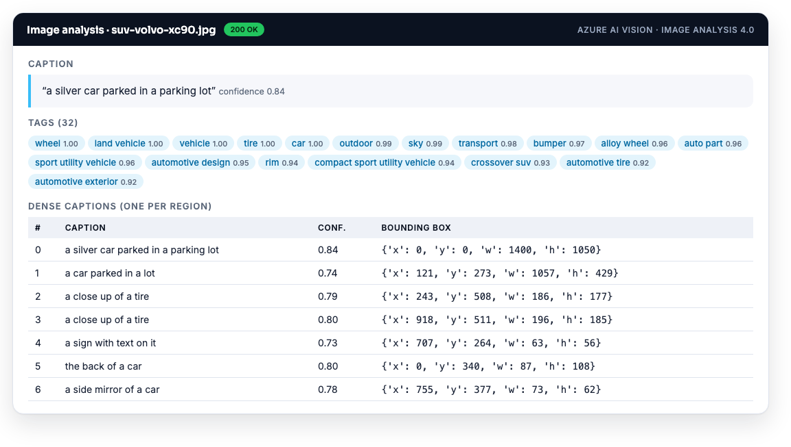
Every feature returns a confidence. The caption is 0.84; the object detector called the SUV a "station wagon" at lower confidence. Structured, honest, and fast.
Try the busy one. The traffic jam returns 11 objects with boxes; the bicycles photo returns cars and a bicycle; the road-trip photo detects a person. Here is what the JSON looks like drawn back onto the photos:
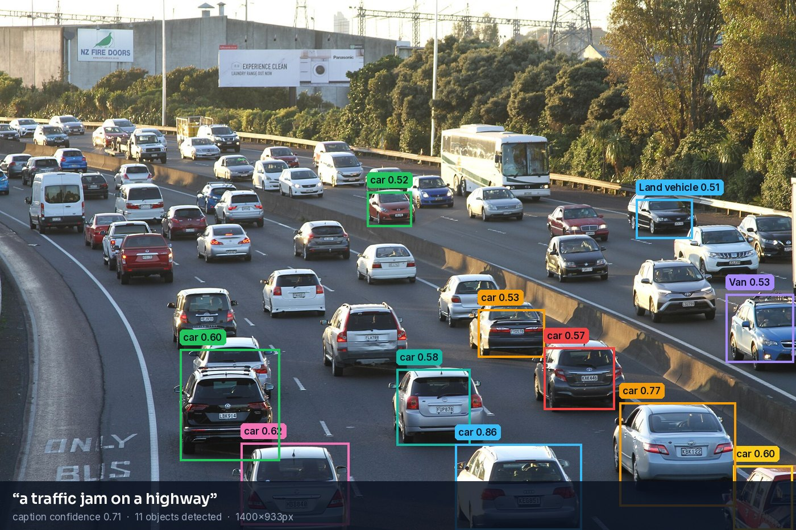
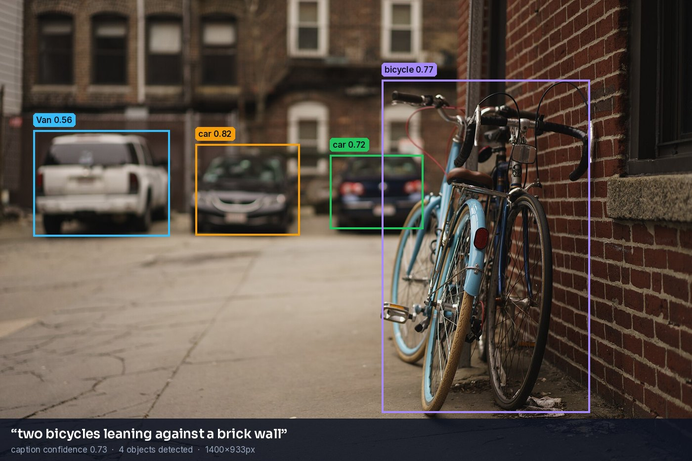
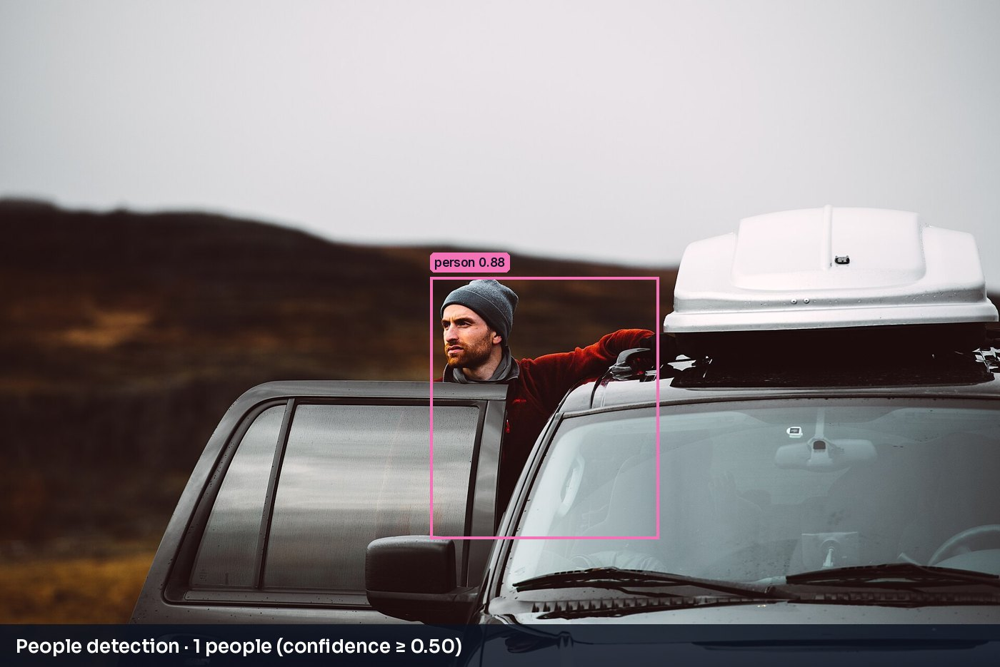
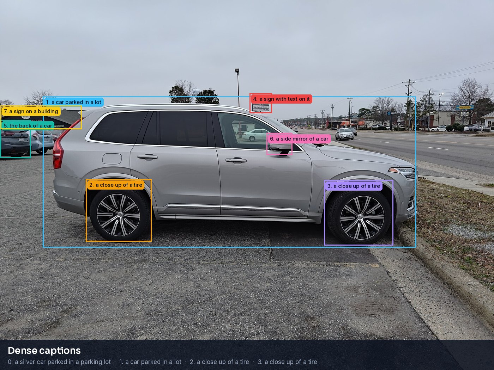
Run it on
lot/carwash.jpgtoo. The caption we got was "a small bushes in a field" at 0.57.Low confidence is the model asking you to look.Every feature returns a number for a reason. Thresholds belong in your application, not in the service.
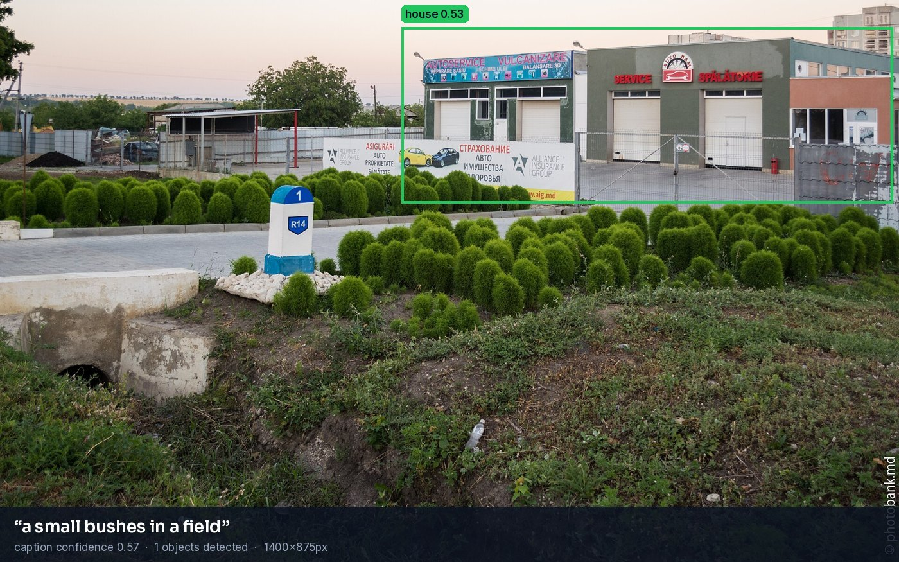
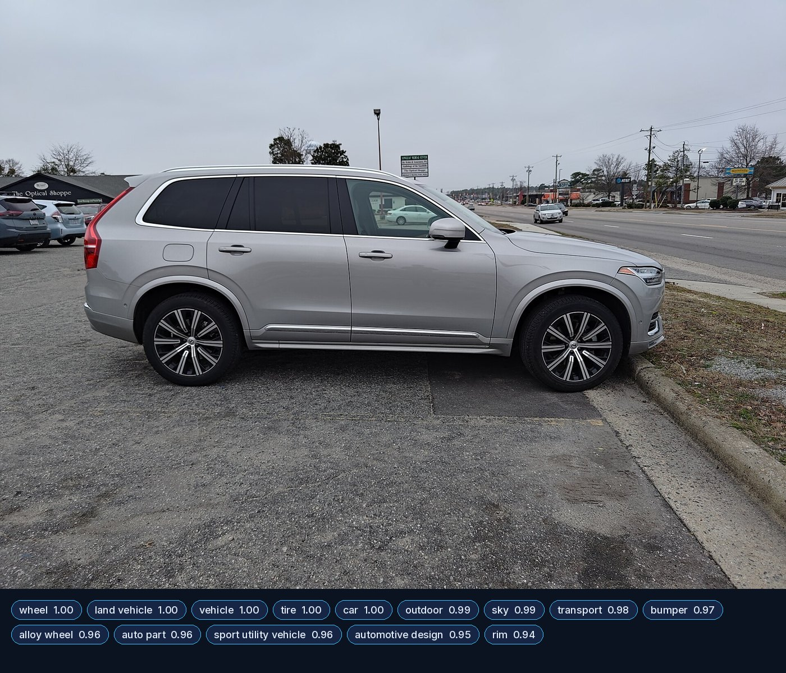
OCR. Point the
readfeature at documents instead of scenes. The window sticker returns 34 lines in reading order with word confidences; the VIN plate reads1VMSTR8A3RA210077correctly; the handwritten note reads seven lines and turns "100 ft-lb" into "100 ft-16".for f in window-sticker vin-plate service-note; do curl -sLO https://varoonsahgal.github.io/az901/downloads/$f.png; done curl -s -X POST "$ENDPOINT/computervision/imageanalysis:analyze?api-version=2024-02-01&features=read" \ -H "Ocp-Apim-Subscription-Key: $KEY" -H "Content-Type: application/octet-stream" --data-binary @vin-plate.png | jq '[.readResult.blocks[].lines[].text]'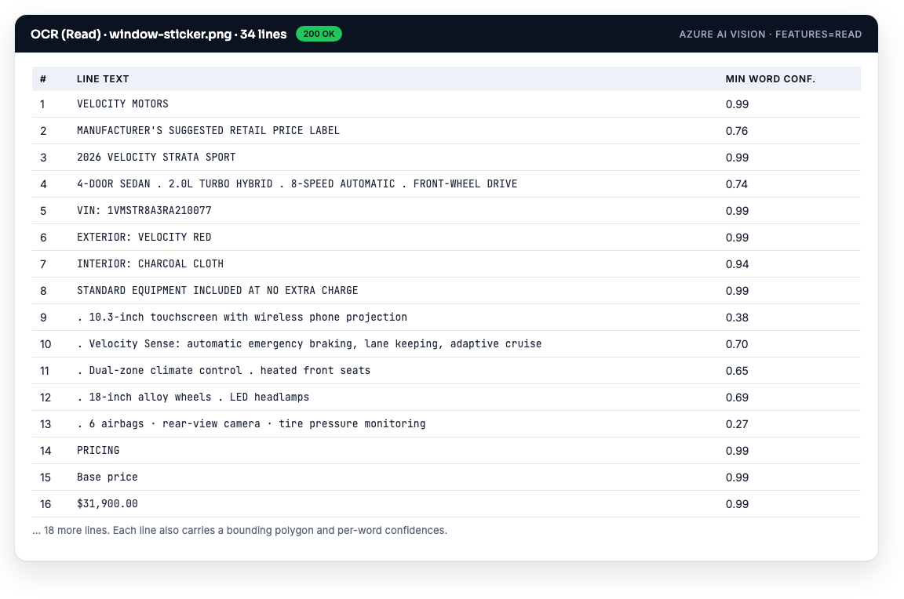
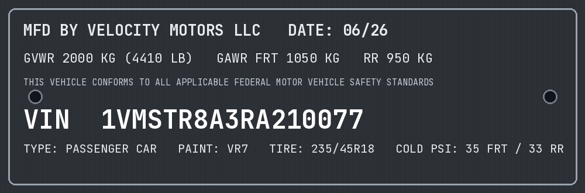
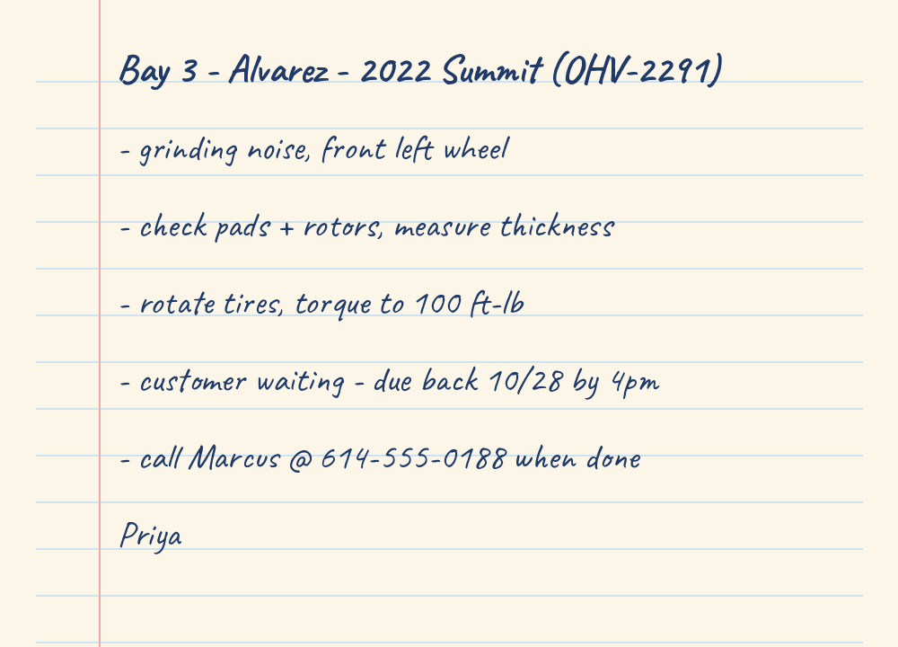
For typed fields out of documents (not just lines of text) you will use Content Understanding in Lap 6. OCR is the raw material.
Part 3The thoughtful eye · a multimodal model
Open your project → Discover → Models →
gpt-4.1-mini→ your deployment → the model playground. Hide the navigation pane.Set Instructions to
You are a Velocity Motors used-car appraiser.In the chat pane select Upload image (the paperclip or image icon) and choose
lot/pickup-ford-f150.jpg. TypeDescribe this vehicle for a listing in 3 bullets, then suggest one thing to inspect.and send.Try
lot/engine-bay.jpgwithWhat am I looking at and which routine maintenance items can you see?Our run named the engine cover, the air intake and the coolant reservoir, for 144 image tokens at low detail: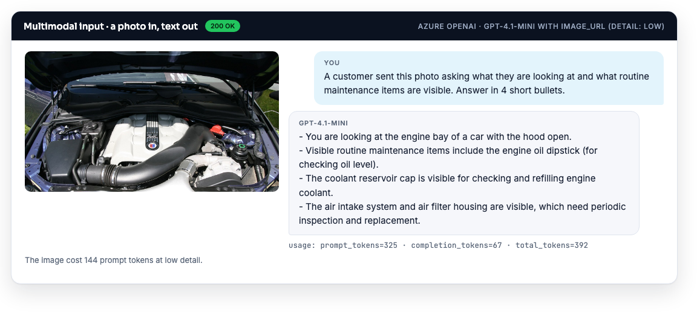
Select Call model (or View code) → Python. Note how the user message content is a list with an
input_textitem and aninput_imageitem (in the chat-completions API:textandimage_url). That list is the whole trick.
vision_app.py runs both eyes on one photo: Azure AI Vision through its SDK, then the multimodal model through the Foundry SDK, with the image sent as a base64 data URL.
curl -sO https://varoonsahgal.github.io/az901/pit-crew/vision_app.py
python vision_app.py lot/pickup-ford-f150.jpg"""Lap 5 · Vision two ways: Azure AI Vision (Foundry Tool) and a multimodal GPT model.
Run: python vision_app.py photo.jpg
Needs: pip install azure-ai-vision-imageanalysis openai azure-identity azure-ai-projects
Env: FOUNDRY_ENDPOINT (https://<resource>.cognitiveservices.azure.com) AI_KEY PROJECT_ENDPOINT CHAT_MODEL
"""
import os, sys, base64
from azure.core.credentials import AzureKeyCredential
from azure.ai.vision.imageanalysis import ImageAnalysisClient
from azure.ai.vision.imageanalysis.models import VisualFeatures
from azure.identity import DefaultAzureCredential
from azure.ai.projects import AIProjectClient
path = sys.argv[1] if len(sys.argv) > 1 else "photo.jpg"
image = open(path, "rb").read()
# 1) Azure AI Vision: fast, cheap, structured — captions, objects with boxes, OCR
vision = ImageAnalysisClient(endpoint=os.environ["FOUNDRY_ENDPOINT"], credential=AzureKeyCredential(os.environ["AI_KEY"]))
res = vision.analyze(image_data=image, visual_features=[VisualFeatures.CAPTION, VisualFeatures.OBJECTS, VisualFeatures.READ, VisualFeatures.TAGS], gender_neutral_caption=True)
print(f"── Azure AI Vision on {path} ──")
print(f" caption : “{res.caption.text}” ({res.caption.confidence:.2f})")
print(" objects :", ", ".join(f"{o.tags[0].name} {o.tags[0].confidence:.2f} @ {o.bounding_box}" for o in res.objects.list) or "none")
print(" tags :", ", ".join(t.name for t in res.tags.list[:10]))
if res.read and res.read.blocks:
print(" text :", " | ".join(line.text for b in res.read.blocks for line in b.lines))
# 2) A multimodal model: slower, costs tokens, but it can reason about what it sees
project = AIProjectClient(endpoint=os.environ["PROJECT_ENDPOINT"], credential=DefaultAzureCredential())
client = project.get_openai_client()
b64 = base64.b64encode(image).decode()
r = client.chat.completions.create(model=os.environ.get("CHAT_MODEL", "gpt-4-1-mini"), max_tokens=250, messages=[
{"role": "system", "content": "You are a Velocity Motors used-car appraiser."},
{"role": "user", "content": [
{"type": "text", "text": "Describe this vehicle for a listing (body style, color, condition clues) in 3 bullets, then suggest one thing to inspect."},
{"type": "image_url", "image_url": {"url": f"data:image/jpeg;base64,{b64}", "detail": "low"}}]}])
print(f"\n── {r.model} (multimodal) ──\n" + r.choices[0].message.content)
print(f" [{r.usage.prompt_tokens} prompt tokens incl. the image]")── Azure AI Vision on pickup.jpg ──
caption : “a white truck parked in a lot” (0.77)
objects : car 0.52 @ {'x': 4, 'y': 120, 'w': 193, 'h': 378}, car 0.80 @ {'x': 0, 'y': 30, 'w': 894, 'h': 745}, car 0.71 @ {'x': 438, 'y': 27, 'w': 931, 'h': 736}
tags : tire, vehicle, land vehicle, wheel, transport, bumper, auto part, outdoor, pickup truck, grille
text : Varen!
── gpt-4.1-mini-2025-04-14 (multimodal) ──
- Body Style: Four-door full-size pickup truck with a crew cab configuration.
- Color: White exterior with a tan/gold lower trim accent.
- Condition Clues: Exterior appears clean with no visible dents or major scratches; tires look to have adequate tread; side mirrors and trim seem intact.
Suggested inspection: Check the condition and operation of the truck’s suspension and undercarriage for wear or damage, especially given the vehicle’s age and potential use.
[308 prompt tokens incl. the image]Vision found three car boxes, tags and even a tiny bit of text; the model wrote the listing and suggested checking the suspension. "detail": "low" keeps the image at a fixed small token cost; use "high" when you need to read fine print.
Part 4Paint it · image generation
Deploy an image model. Portal: Models → Deploy a base model → Collections: Direct from Azure → Inference tasks: Text to image → FLUX.2-pro (or
gpt-image-1-miniif your subscription offers it) → Deploy, Global Standard, capacity 1. Or in Cloud Shell:az cognitiveservices account deployment create --name $NAME --resource-group $RG \ --deployment-name flux-2-pro --model-name FLUX.2-pro --model-version 1 --model-format "Black Forest Labs" \ --sku-name GlobalStandard --sku-capacity 1 -o tableCapacity 1 allows about one image per minute; a
429means wait. Each image costs a few cents.Image playground. When the deployment finishes the image playground opens. Prompt:
Dramatic studio photo of the Velocity Volt, a sleek electric sedan concept car in deep metallic red, parked on a wet racetrack at golden hour, low angle, photorealistic. Then View code → Python → the OpenAI SDK sample callsimages.generateand savesoutput.png.The same call from Cloud Shell. The response carries the image as base64 in
data[0].b64_json.# FLUX.2-pro answers on its publisher's native route on the Foundry host: curl -s -X POST "$AI_ENDPOINT/providers/blackforestlabs/v1/$IMAGE_MODEL?api-version=preview" \ -H "api-key: $KEY" -H "Content-Type: application/json" \ -d '{"model":"flux-2-pro","prompt":"Clean product render of a Velocity Ridge hybrid pickup truck in glacier white, three-quarter front view, on a mountain road at sunrise, photorealistic","width":1024,"height":768}' \ | jq -r '.data[0].b64_json' | base64 -d > ridge.png && ls -la ridge.png # FLUX-1.1-pro and the gpt-image models use the Azure OpenAI-style route instead: curl -s -X POST "$AI_ENDPOINT/openai/deployments/flux-1-1-pro/images/generations?api-version=2025-04-01-preview" \ -H "api-key: $KEY" -H "Content-Type: application/json" -d '{"prompt":"…","n":1,"size":"1024x768"}' | jq -r '.data[0].b64_json' | base64 -d > out.pngcurl -sO https://varoonsahgal.github.io/az901/pit-crew/make_image.py python make_image.py "Retro 1960s-style advertising poster for Velocity Motors: a cheerful family loading a surfboard onto a teal station wagon, bold typography reading VELOCITY" poster.png"""Lap 5 · Generate an image with a Foundry image model (FLUX.2-pro, FLUX-1.1-pro, gpt-image-1-mini, ...). Run: python make_image.py "prompt text" out.png Needs: pip install requests Env: FOUNDRY_ENDPOINT_AI (https://<resource>.services.ai.azure.com) AI_KEY IMAGE_MODEL (deployment name, default flux-2-pro) Note: a capacity-1 deployment allows about one request per minute; a 429 means wait 60 seconds and retry. """ import os, sys, base64, requests prompt = sys.argv[1] if len(sys.argv) > 1 else "A sleek Velocity Volt electric sedan on a wet racetrack at golden hour, photorealistic" out = sys.argv[2] if len(sys.argv) > 2 else "out.png" model = os.environ.get("IMAGE_MODEL", "flux-2-pro") base = os.environ["FOUNDRY_ENDPOINT_AI"].rstrip("/") headers = {"api-key": os.environ["AI_KEY"], "Content-Type": "application/json"} # Route 1 · the publisher's native API on the Foundry host (this is how FLUX.2-pro answers) r = requests.post(f"{base}/providers/blackforestlabs/v1/{model}?api-version=preview", headers=headers, json={"model": model, "prompt": prompt, "width": 1024, "height": 768}, timeout=180) if r.status_code == 404: # Route 2 · the Azure OpenAI-style route (FLUX-1.1-pro, gpt-image-1-mini and friends) r = requests.post(f"{base}/openai/deployments/{model}/images/generations?api-version=2025-04-01-preview", headers=headers, json={"prompt": prompt, "n": 1, "size": "1024x768"}, timeout=180) if r.status_code == 429: sys.exit("429: the deployment's rate limit (about one image per minute at capacity 1) — wait a minute and try again") r.raise_for_status() open(out, "wb").write(base64.b64decode(r.json()["data"][0]["b64_json"])) print(f"saved {out} ({os.path.getsize(out)//1024} KB) · model {model} · prompt: {prompt!r}")What we got. The first two were generated with FLUX-1.1-pro (East US, Azure OpenAI-style route); the next two with FLUX.2-pro (East US 2, provider route). Same prompts, same script.
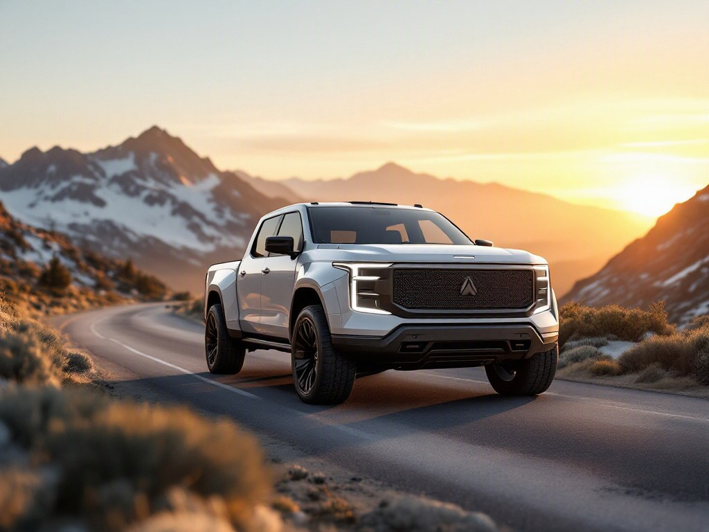
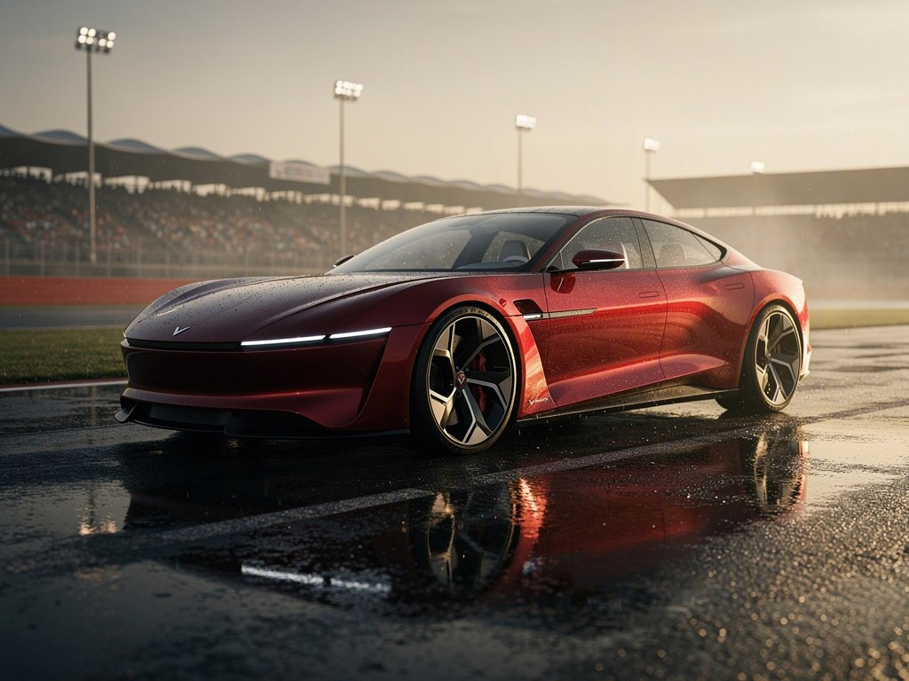
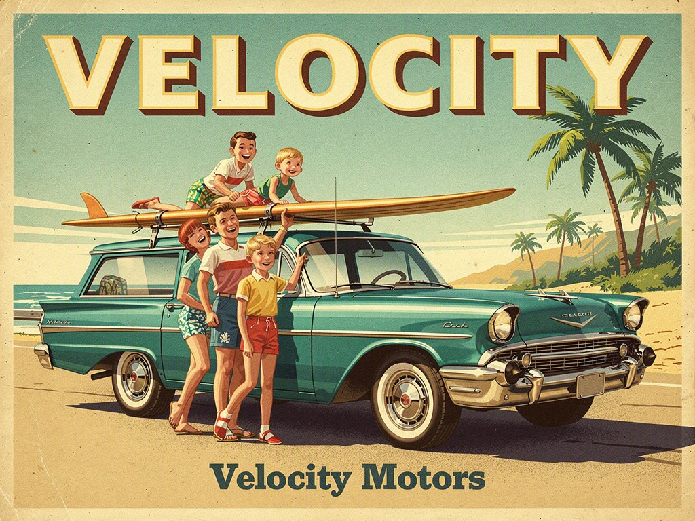
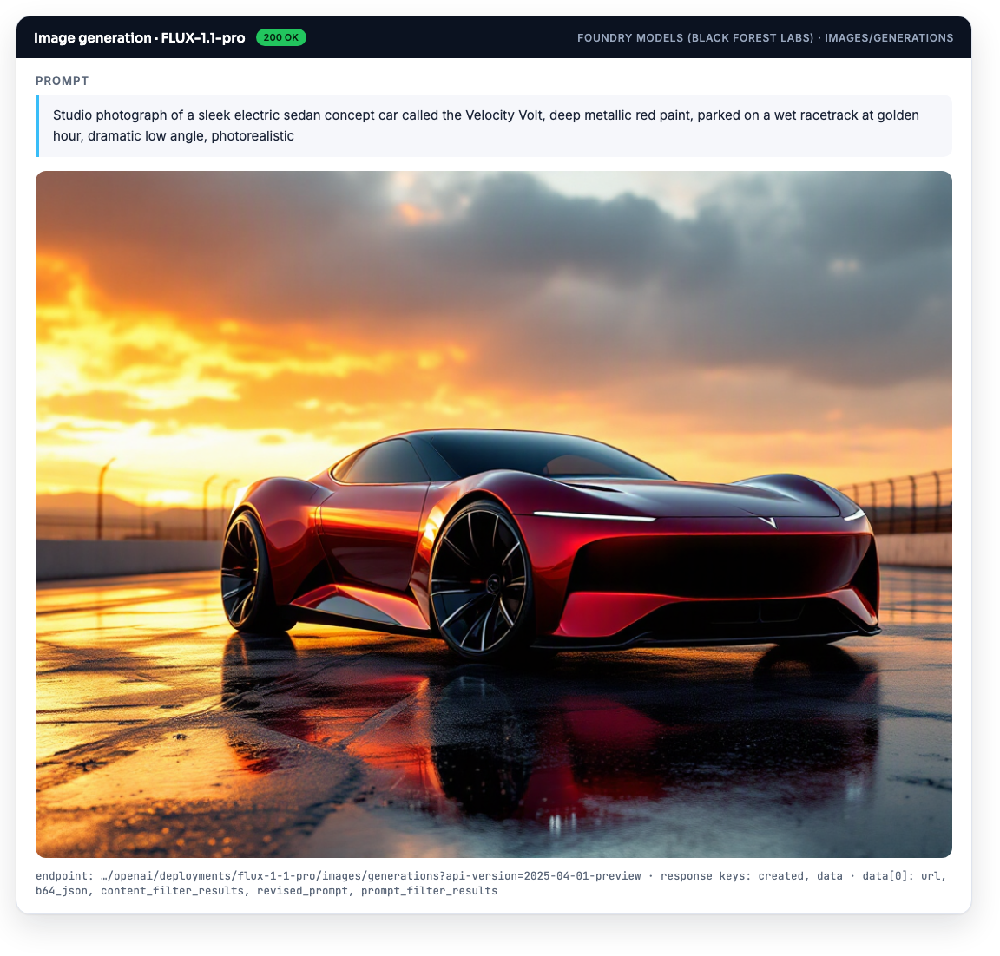
Responsible use. Generated images from Foundry models include content credentials (C2PA provenance metadata). Do not generate real people, competitors' badges or copyrighted characters; the content filters will refuse some prompts and your brand team will refuse others. Label concept art as such in customer-facing material.
You have a JSON analysis with boxes for at least two lot photos, the VIN read from the plate, a listing written by the model from a photo (portal or vision_app.py), a deployed flux-2-pro and at least one generated PNG.
🏁Overtake · if you finish early
No steps given. Each takes five to ten minutes.
- Sixteen photos, one CSV. Loop
vision_app.py(or just the Vision half) over every file inlot/and write one line per photo: file, caption, confidence, number of objects. Sort by confidence. Which photos would you send to a human? - OCR versus the model. Send
window-sticker.pngto gpt-4.1-mini with "List the VIN, total MSRP and combined MPG" atdetail: high, then compare with the Read result. Which one got the VIN right, and how many tokens did the model's version cost? - Same prompt, different canvas. Generate the Volt prompt at
1024x768and then at768x1024(one minute apart). Does the composition change, or only the crop? Now add "no text, no badges" to the prompt and see what the content filter and the model do with brand marks.
Troubleshooting
Vision returns 400 "InvalidImageSize" or "InvalidImageFormat"
Images must be JPEG/PNG/GIF/BMP/WEBP/TIFF, under 20 MB, at least 50×50 and at most 16,000 px on a side. The read feature needs text at least about 10 px tall.
The model playground has no Upload image button
Only multimodal models show it. Check the deployment selector says gpt-4-1-mini (or gpt-4o, gpt-5); embeddings and image models do not take image prompts.
Image generation: 429 RateLimitReached
Capacity 1 = one request per minute. Wait 60 seconds. If the whole class is blocked, race control can raise one deployment's capacity.
Image generation: 404 "Not Found" or 429 on the images/generations route
Not every image model is wired to the Azure OpenAI-style /openai/deployments/…/images/generations route. On our East US 2 resource, flux-2-pro returned 404 or 429 there even when idle, but answered immediately on its publisher's route: $AI_ENDPOINT/providers/blackforestlabs/v1/flux-2-pro?api-version=preview with {"model":"flux-2-pro","prompt":…,"width":1024,"height":768}. FLUX-1.1-pro and the gpt-image models work on the images/generations route. make_image.py tries the provider route first and falls back. A real 429 (rate limit) clears after a minute.
"The deployment type GlobalStandard is not available"
Image models are Global Standard only; your resource must allow it (ours in East US 2 does). Check az cognitiveservices usage list --location $LOC -o table | grep FLUX for quota.
Quick quiz
You need to count cars in a lot photo. Which feature?
Object detection (the objects feature): labels with bounding boxes. Tags and captions do not locate anything.
How do you send an image to a chat model in the API?
As a content item in the user message: {"type": "image_url", "image_url": {"url": "data:image/jpeg;base64,…"}} (or input_image in the Responses API), next to a text item.
Which Azure service identifies who a face belongs to, and what is special about it?
Azure AI Face; identification and verification are Limited Access and require an approved use case. Azure AI Vision only detects people.
Which call produces a picture from a prompt?
images/generations on an image-model deployment (FLUX, gpt-image), returning base64 image data.
When is Azure AI Vision the better choice over a multimodal GPT model?
When you need structured output (boxes, OCR lines with coordinates), speed, and low cost at volume. Use the GPT model when you need reasoning or free-text judgement.
Pit wall debrief · what you learned
- Vision tasks: classification, detection, captioning, tagging, OCR, people; faces are a separate, restricted service.
- Azure AI Vision returns structured JSON with confidences; a multimodal model returns judgement in prose. Pick by need.
- Images go into a prompt as content items;
detailsets the token cost. - Image models are deployed like any other (Global Standard, capacity in requests per minute) and called with
images/generations. vision_app.pyandmake_image.pyare your lightweight vision apps.
Next: turn paperwork into data. Lap 6 · Paperwork →